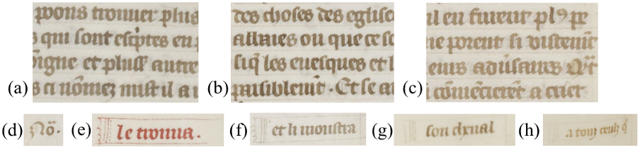
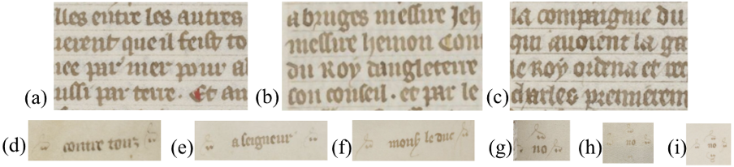
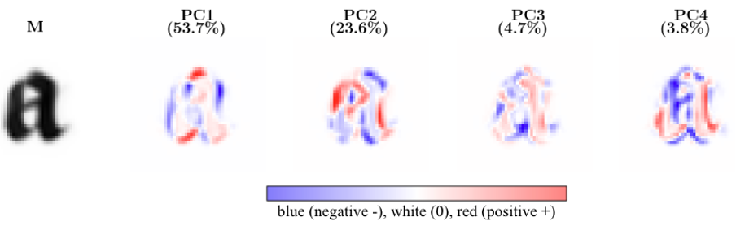
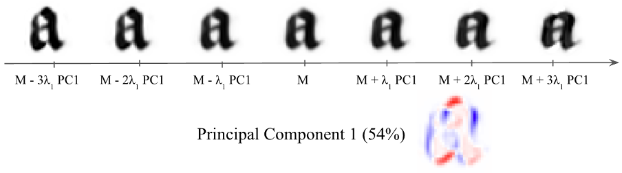
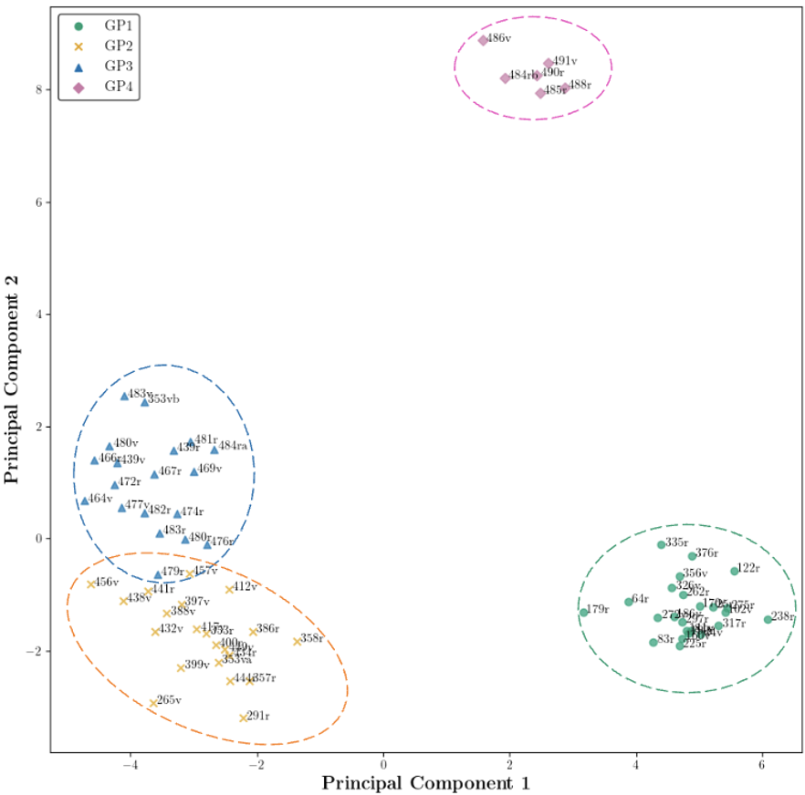
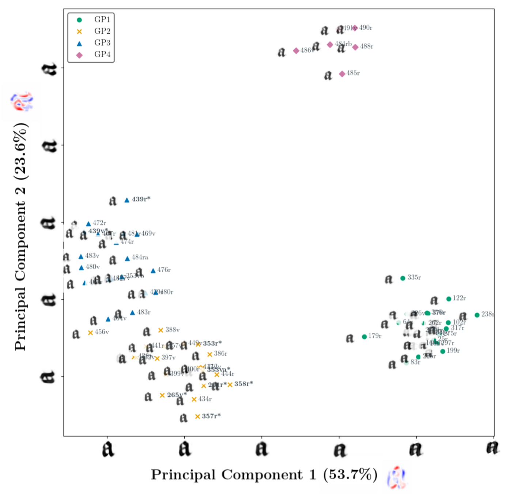
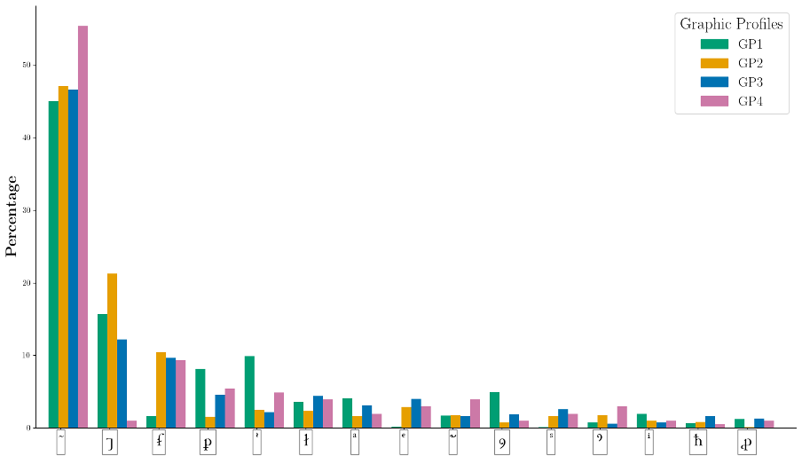
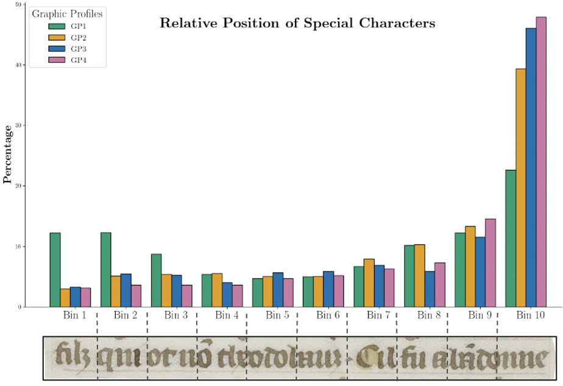

Interpretable Deep Learning for Palaeographic Variability
Analysis;
revisiting the scribal hands of Charles V' Grandes
Chroniques de France (Paris, BnF, fr., 2813)
Scriptorium (forthcoming)
2. LIGM, Ecole des Ponts, Univ Gustave Eiffel, CNRS, Marne-la-Vallee


Abstract
This study introduces an interpretable scribal hand characterization and variability analysis based on a deep learning framework combining graphic tools with statistical analysis of scribal practices. Designed to bridge the gap between traditional palaeographic methods — based on qualitative observations — and automatic computational models, our approach enables interpretable character-level inter- and intra-scribal variation analysis and graphic profiling. We demonstrate our method on Charles V's copy of the Grandes Chroniques de France (Paris, BnF, fr. 2813), revisiting the traditional attribution to two royal scribes of Charles' V, Henri de Trévou and Raoulet d'Orléans. Through the definition and characterization of graphic profiles and complementary statistical analysis of abbreviation usage and space management, we offer a more systematic and context-aware understanding of scribal behavior in the manuscript.
Case Study: Henri de Trévou and Raoulet d'Orléans
The manuscript Paris, BnF, fr. 2813 presents a striking contrast: while Henri de Trévou's hand (f. 1r–385v) demonstrates remarkable stability, Raoulet d'Orléans' section (f. 386r onwards) exhibits significant internal variability. Previous scholarship has documented Raoulet's oscillation between different script styles and shifts in execution, yet this variability has been primarily noted rather than systematically analyzed. Our computational approach reveals four distinct graphic profiles and provides new insights into the relationship between production circumstances and scribal variation.

Figure 1a: Examples of Henri's handwriting throughout the manuscript (a-c: f. 25r, 162r, 297r) and characteristic catchphrases (e-h). Source: BnF.

Figure 1b: Samples from different moments of Raoulet's hand (a-c: f. 386r, 481r, 490v) and characteristic catchwords (d-f). Source: BnF.
Dataset: 68 pages (24 Henri, 44 Raoulet), ~6,600 lines of text. Data available via Zenodo.
After processing, character prototypes were extracted using the Learnable Handwriter method—one for each page.
Variability Analysis Method
To systematically explore the graphic profiles present in the manuscript and to identify the underlying morphological variations, we visualize the main variations of the prototypes using Principal Component Analysis (PCA). Rather than relying on predefined stylistic categories, this method allows the structure of variation to emerge directly from the data.
Figure 3: The first four Principal Components for the letter ‹a› in our dataset. Red and blue regions indicate
areas of strongest deviation from the mean in opposite directions, while white signifies minimal contribution to
variation. Percentages refer to the total variance explained by each component.

To interpret the red and blue regions highlighted in the PC1 visualization — and thereby explain the morphological variability — we visualize the gradation of PC1, by adding or subtracting integer multiples of PC1, from –3λ1 to +3λ1, to the mean image M, as illustrated in Figure 4. The eigenvalue λ₁ indicates the amount of variation explained by PC1 and determines the amplitude of the deformation.
Figure 4: Principal Component Interpretation: Gradation along the first principal component for the letter ‹a›,
visualized at key positions from -3λ₁ to +3λ₁.

Graphic Profile Discovery
Using a Combined PCA across multiple letters (‹a›, ‹d›, ‹g›, ‹m›, ‹o›, ‹t›), we identify four distinct graphic profiles (GP1–GP4) characterized by shared morphological traits. PCA plots create a map of the graphic landscape, where clustering reveals similar expression profiles and helps identify key discriminative features.
Figure 5: PCA plots revealing the graphic landscape of the manuscript.

Figure 5a: Combined PCA plot for letters "a","d","g","m","o","t".

Figure 5b: PCA plot for the letter "a".
Statistical Analysis
We further refine the graphic profiles through statistical analysis of abbreviative habits and line management, providing a more nuanced view of scribal practice and its relationship to graphic variation.
Figure 6: Example of statistical analysis.

Figure 6a: Abbreviation usage patterns.

Figure 6b: Distribution of abbreviations within lines.
References
Cite Us
@article{vlachou2025grandes-chroniques-fr-2813,
title = {Interpretable Deep Learning for Palaeographic Variability
Analysis; revisiting the scribal hands of Charles V' Grandes
Chroniques de France (Paris, BnF, fr., 2813)},
author = {Vlachou-Efstathiou, Malamatenia},
publisher = {Scriptorium (forthcoming)},
year = {2026},
url = {}
}Acknowledgements
This study was supported by the CNRS through MITI and the 80|Prime program (CrEMe Caractérisation des écritures médiévales), and by the European Research Council (ERC project DISCOVER, number 101076028). I would like to express my deepest gratitude to my advisors, Prof. Dr. Dominique Stutzmann (IRHT-CNRS) and Prof. Dr. Mathieu Aubry (IMAGINE-ENPC), whose guidance, insightful feedback and proofreading, as well as continuous support were instrumental throughout the writing of this paper.